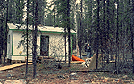

P.I.(s): David R. Fitzjarrald -- State University of New York, Albany, Atmospheric Sciences Research Center
Co-I(s): Kathleen E. Moore -- State Univ. of New York, Albany
Objectives: This study focuses on long-term measurements of radiation, heat, moisture, carbon dioxide and momentum budgets from the tower at the Northern Study Area Old Jack Pine site. Turbulent fluxes were determined using the eddy correlation technique and radiative fluxes in the short, long, near infrared, and PAR wavelength bands were acquired as well as soil moisture content. Collaborating with other groups the CO2 gradient inside and just above the canopy were acquired. In addition, a digital cloud camera was used to obtain a seasonal record of cloud fraction and cloud type.
 The flux tower at NSA-OJP |  Hut and Dave Fitzjarrald |
Objectives:
Types of Data Collected:
Heat, water vapor, momentum fluxes using the eddy correlation method at two levels, components of radiation budget and related to the observed cloud fraction, type, and height, observed rainfall above and inside the canopy and soil moisture.
Equipment Used:
Most instruments were mounted on a 30 m Roln 30G triangular cross-section tower. Turbulent fluxes were obtained using ATI, Inc. 3-D sonic anemometers (w',u',v',Tv') and a Gill propeller anemometer (U', direction') along with krypton hygrometers (q'), Li-Cor CO2 and H2O IRGA (q',CO2), and an A.I.R. Inc. fine-wire thermocouple (T'). The sonic was rotated regularly to face the wind, minimizing obstacle effects. The mean wind profile was made using cup anemometers. Automatic rain gauges were operated at one level above the canopy and two places in the canopy (one with a collecting trough). Four manual rain gauges were placed below the canopy. -Upwelling and downwelling long- and short-wave radiative flux components (Kipp & Zonen, Inc) were operated above the canopy. At one level above the canopy and two levels within the canopy Swissteco net radiometers were operated. At three sites, 3 levels of soil temperature and 1 level of soil heat flux were operated. The CSU ceilometer was used to determine cloud base up to 25000 ft. A partial-sky video camera was used to make digital images of the sky. The McGill University TDR probe sampled soil moisture at 3 levels at an open lichen site and at a moss-covered site. An automatic GC from U. of New Hampshire was used to obtain the methane gradient on the tower.
Summary of Places and Times of Measurements:
All observations were made at the NSA Old Jack Pine site. Observations began 5/25/94 (Day 145) for mean gradient and radiation instruments. Flux observations were done between 5/30/94 and 9/21/94 (Day 264). All turbulence data were archived at 10 Hz; fluxes, moments, and spectra were calculated in real time.
Known Problems or Caveats:
Power problems between 7/5 and 7/13 lead to data gaps then. Intermittent problems with the second level sonic anemometer led to sporadic periods of bad data. There is noise in some soil temperature channels in mid-summer. Much of the missing flux data is being reinstated using post-processing.
TF Overview || TF-1 | TF-2 | TF-3 | TF-4 | TF-5 | TF-6 | TF-7 | TF-8 | TF-9 | TF-10 | TF-11
 Send a data request to the BOREAS Data Manager (BOREAS Investigators only)
Send a data request to the BOREAS Data Manager (BOREAS Investigators only)
E-Mail a comment on this page to the curator 
Send e-mail to Fred Huemmrich, the BORIS representative for the TF group
Return to the TF Overview
Return to the BOREAS Science Groups Overview
Return to the BOREAS Home Page
Last Updated: October 30, 1997
{kind=link}